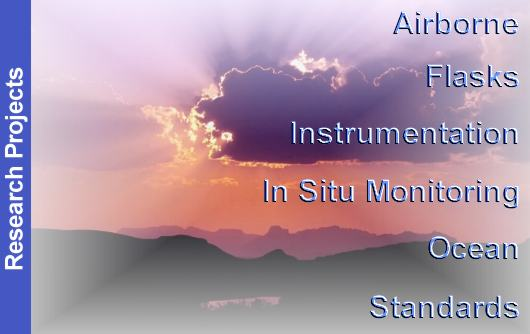

| The
general mission of the Halocarbons and other Atmospheric Trace Species
group is to quantify the distributions and magnitudes of the sources and
sinks for atmospheric nitrous oxide (N2O) and
halogen containing compounds. HATS utilizes numerous types of platforms,
including ground-based stations, towers, ocean vessels, aircraft, and
balloons, to accomplish its mission. For a detailed mission statement,
click
on the "FAQ" below.
Press Release -- POLAR SNOW REVEALS SECRETS OF OZONE DEPLETING GASES |
||
|
|
 [FAQ]
[New]
[New Positions] [Figures]
[Data] [Airborne]
[Flasks] |
|